Richmond, VA, under water: the James River floods of 1771 to 2020 and Gaston's rain of 2004
Richmond's low ground along the James drawn in each of its great river floods from 1771 to 2020, before and after the floodwall, and in the rain of August 30, 2004, each at its recorded or estimated height on the city of its year.
Read this as a PDF: phone edition, large-screen edition

Fig. 1. Shockoe Bottom on June 23, 1972, drawn dry (left of the divider) and with the water of the Agnes flood at its recorded height, 35.5 feet above sea level (right). Drag the divider, or move it with the arrow keys. The view looks north-northeast up the valley from over the James.
About this page. Chris Busse, a Richmond artist, drew the maps on this page with isoscape, the drawing tool he has built with Claude. The text was drafted with Claude for Chris from public records: gauge records and flood reports of federal agencies, the city's accounts of its floodwall, news reports, and the maps and air photos listed under Sources. Corrections are welcome through the contact page, and changes will be dated here.
The James River has flooded the same low ground in Richmond for as long as anyone has recorded it. Each great flood drawn here, from 1771 to 1985, put water into Shockoe Bottom and the river streets below downtown and over Mayo Island; the one that was mapped, in 1969, also covered the Manchester flats on the south bank [USGS HA-410]. Since 1994 a floodwall built by the Army Corps of Engineers with the city has kept the river out of Shockoe Bottom and most of the Manchester flats, and the highest water since then stood about 17 to 18 feet below the height at which the weather service says the wall would be overtopped [NWS City Locks]. On August 30, 2004, Shockoe Bottom flooded anyway, from about 10 inches of rain that fell on the land draining to it in one afternoon and evening, while the James stayed far below flood stage [Rain analysis; USGS Westham].
The drawings put each flood on the ground it covered. The water is drawn level at the height the water reached at the City Locks gauge, at the foot of Pear Street, laid on today's lidar survey of the ground, among the buildings that stood that year as maps, records and air photos show them. They show where water at that height could stand. They cannot show how the water moved or how long it stayed, and the section What the drawings cannot show sets out the rest of their limits.
These pictures draw the ground and what stood on it. What the floods meant to the people who lived and worked in these blocks, and to the families of those who died, is theirs to tell.
On this page: how to read the drawings · why these blocks flood · 1771 · 1936 · 1969 · 1972 · 1985 · the floodwall · 1996 and 2020 · Manchester · 2004 · limits · sources
How to read the drawings
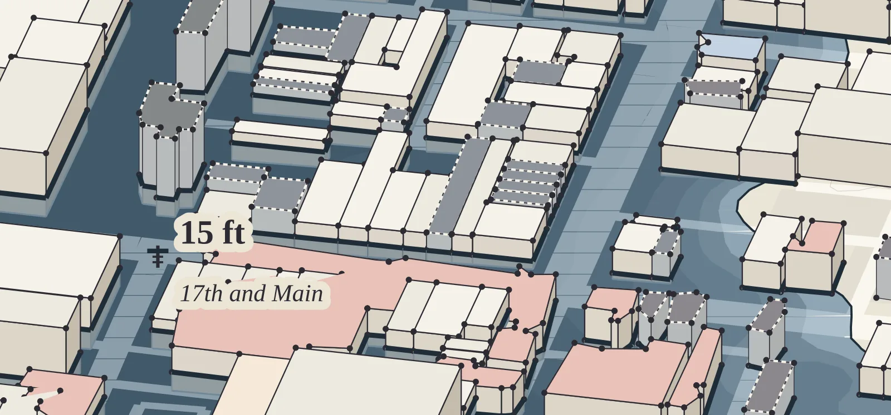
Fig. 2. The blocks around the 17th Street Market in the drawing of June 23, 1972, close up. The gauge at 17th and Main reads 15 feet: the height the water reached less the height of the ground at that corner on the lidar. How this was made: a crop of the 1972 drawing.
Every flood drawing uses one key. Water standing on land is a blue-grey that darkens with depth, from a pale edge to its darkest tone at 20 feet and more. Water at its everyday level, in the river and the canal basins, keeps a light blue, so the river and the ground it covered read apart. Where water stands against a building, the part of the wall below the surface is drawn over the water as a paler band, with a dark line at the waterline; it shows best in close views, since on a whole drawing 11 feet of water is about six pixels [How it's made, Floods]. A small post with a figure is a depth gauge, reading the depth in feet at a named place.
Buildings are drawn as they stood in the year of the flood. A cream building is one that sources show standing that year: today's buildings dated by records or an air photo, and buildings traced from the Sanborn fire-insurance maps that a later photo still shows. A grey building with a dashed roof edge appears on an earlier map or photo, and nothing we found says whether it still stood that year [How it's made, Floods].
A diagonal hatch marks the range of an estimate: ground that water would have reached at the top of its range. A cross-hatch, used only in Manchester, marks ground whose protection the data cannot show (below). Every flood also has a dry twin, the same city and ground drawn with no water and aligned to it pixel for pixel, so a divider can pass between the two, as in the picture at the top of this page.
Heights on this page are feet above sea level on the national datum surveyors use today (NAVD88), read at the City Locks gauge unless a place is named. Records made at the City Locks before 2007 used an older datum; converted, they come out about 1.03 feet lower. Readings before 1957, from an older gauge near the Mayo Bridge, are converted from its own scale [River datums; Second read].
Why Shockoe Bottom and the Manchester flats flood
Shockoe Bottom is the floor of the valley of Shockoe Creek, which runs south from north of I-64 to the James near 17th and Dock streets [The Richmonder 2024]. The city put the creek's lower course into underground conduits in the 1920s [Richmond magazine 2013], so no stream shows today, but the ground still falls to the same place. On the lidar the lowest point of the Bottom is a pit beside the 17th Street Market at 13.4 feet above sea level, and the corner of 17th and Main stands at 21.6 feet [Spill test]. Across the river the Manchester flats run from the riverbank to about Commerce Road [USGS HA-410].
The floods that reach these blocks are made far upstream: the James above Westham drains 6,753 square miles [USGS Westham], and no dam on the river stores floods before they reach the city. FEMA's flood study estimates that Gathright Dam, high on the Jackson River, lowers Richmond's flood peaks by about 1.5 percent [FEMA Richmond 1998].
Below the falls the James is a tidal river, and in a flood its surface there is close to level. In 1969 the water rose only about 1.3 feet from the City Locks to the Mayo Bridge, then climbed more than 50 feet through the falls to the Boulevard Bridge [USGS HA-410; Second read]. Shockoe Bottom, Mayo Island, the Manchester flats and Rocketts all lie on that flat reach, so one height per flood, read at the gauge, serves all of them.
| Flood | Water at the City Locks, feet | Acres under water | Buildings in water, of those shown |
|---|---|---|---|
| May 1771 | about 38 (±3, our judgment) | 231.5 | 1 of 6 |
| March 1936 | 26.5 (±0.4) | 159.1 | 144 of 1,172 |
| Camille, Aug. 22, 1969 | 27.6 (±0.2) | 174.2 | 141 of 1,171 |
| Agnes, June 23, 1972 | 35.5 (±0.3) | 220.4 | 226 of 1,173 |
| Nov. 7, 1985 | 29.7 (±0.4) | 192.5 | 148 of 1,111 |
| Fran, Sept. 8, 1996 | 22.7 (up to 1 more) | 89.5 outside the wall | 10 of 1,174 |
| Gaston's rain, Aug. 30, 2004 | the James low; the Bottom drawn at about 28 (reports imply 24 to 35; see 2004) | 31.4 | 99 of 1,059 |
| Nov. 14, 2020 | 17.0 (±0.1) | 36.8 outside the wall | 3 of 1,105 |
Levels are those the series checked against gauge records and surveyed marks, on today's datum [Levels]. Acres are land under water in the Shockoe view, the river's own channel left out. "Shown" means the buildings the drawing puts on that year's city in the frame (what that includes) [Counts].
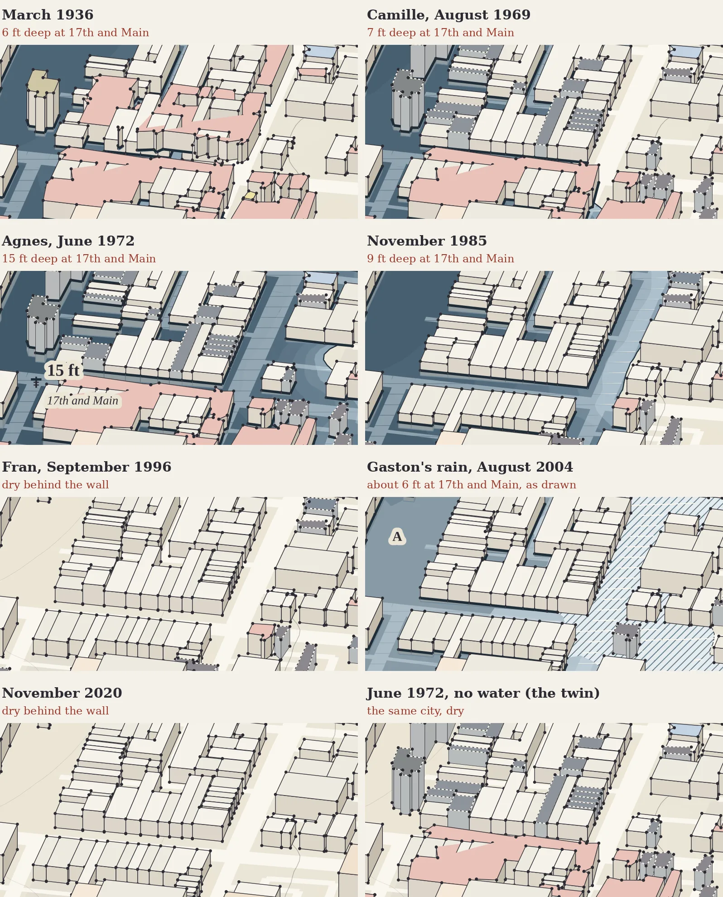
Fig. 3. The same blocks around the 17th Street Market in each flood the series draws, each on the city of its year. Behind the wall, in 1996 and 2020, the blocks are dry; in 2004 the water came from rain. The last view is the 1972 city with no water. How this was made: the same close view cut from each of the eight drawings; depths at 17th and Main from the 2-meter lidar [Counts].
The flood of May 1771, drawn as an estimate
The flood of May 1771 is the highest on record at Richmond, and its height rests on diaries. A 1970 report of the U.S. Geological Survey gives a stage of 38 feet for May 27, 1771, from a Corps of Engineers report, on the scale of the old Weather Bureau gauge near the Mayo Bridge, and says such early stages were set from authenticated diary accounts [USGS OFR 70-51]. Converted, that puts the water at about 38 feet at the City Locks, about two and a half feet above Agnes [Levels]. Other accounts give 30 feet and 45 feet, on bases they do not state [Henrico County; Richmond Family Magazine 2019]. Henrico County's account of the flood says it destroyed buildings and boats in Richmond and that about 150 people died along the river [Henrico County].
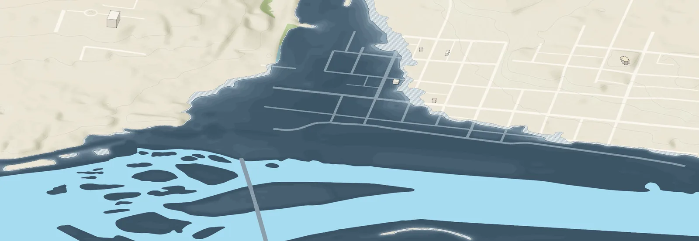
Fig. 4. Water at about 38 feet, on today's ground, with a hatch to 41 feet for the range. The town of about 1788 is drawn as far as the downtown history can place it: in this frame, six buildings and the street plan of 1737. How this was made: the 1771 drawing [Levels; Counts].
The drawing says where water at that height could stand on the ground as it lies now. It says little about what the water met in 1771, since few of the town's buildings can be placed, and the ground has been cut and filled many times since.
The flood of March 1936
The flood of March 1936 crested at about 26.5 feet at the City Locks [USGS PP 924; Levels]. It is the oldest flood here with surveyed high-water marks: the Geological Survey plotted about a dozen of them along the river [USGS HA-410]. A National Weather Service history of Virginia's floods says the water seriously flooded the city's industrial and business sections [Watson, Virginia Floods].
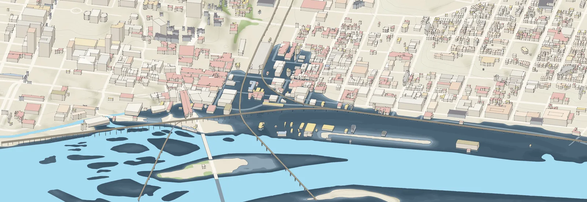
Fig. 5. March 1936 on the city of 1936: water at 26.5 feet, 159.1 acres under water off the channel, and 144 of the 1,172 buildings shown standing in it [Counts].
Camille's flood, August 1969
The remnants of Hurricane Camille brought the James to 28.64 feet on the gauge's old datum at 6 a.m. on August 22, 1969 [USGS OFR 70-51], about 27.6 feet today [Levels]. The Geological Survey reported that warning ahead of the crest limited losses, though the lowest parts of the city flooded seriously [USGS OFR 70-51]. It also mapped the flooded ground on its Richmond quadrangle map, the best record of any flood here: the floor of the Shockoe Valley up to about Main Street Station, all of Mayo Island, the Manchester flats as far as about Commerce Road with the sewage treatment plant, and the Gillies Creek valley through Fulton [USGS HA-410]. FEMA's flood study records that pumping at the levee then standing at the mouth of Shockoe Creek had to be stopped during Camille for structural reasons, and that the levee was overtopped in 1972 [FEMA Richmond 1998; FEMA Richmond 2025].
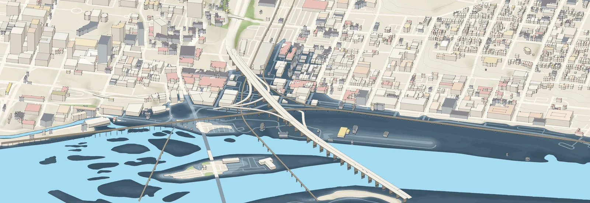
Fig. 6. August 1969 on the city of 1969: water at 27.6 feet, 174.2 acres under water off the channel, and 141 of the 1,171 buildings shown standing in it. The Geological Survey's mapped water reached about as far up the valley [Counts; USGS HA-410].
The Agnes flood of June 1972, the highest in the gauge record
Agnes brought the highest water of the gauge era. At the City Locks the James crested at 36.5 feet on the gauge's datum of the time at 4 p.m. on June 23, 1972 [NOAA Agnes report; USGS PP 924], 35.5 feet today, and a high-water sign at Dock and Pear streets marks the same height, 17 feet above the ground there [Agnes sign]. Upstream at Westham the river carried 313,000 cubic feet a second, still the record [USGS Westham].
NOAA's survey of the disaster records that low-lying areas were evacuated from the morning of June 22 and that by June 23 downtown had lost its power and its drinking water. The city's water purification plant was flooded and four of the five bridges across the James were closed. The National Guard cordoned off parts of the city [NOAA Agnes report]. The older levee at the mouth of Shockoe Creek was overtopped [FEMA Richmond 1998]. The high-water sign records 13 local deaths and more than $140 million in local damage [Agnes sign]; NOAA's report counts five deaths along the James [NOAA Agnes report].
In the drawing, water at 35.5 feet covers 220.4 acres of the Shockoe view off the river's channel, and 226 of the 1,173 buildings shown stand in it, half of them in 10.2 feet of water or more at the deepest point of their footprint, the deepest in 33.2 feet [Counts]. The gauges read 15 feet at 17th and Main, 11 feet at Main Street Station and 19 feet at 17th and Dock.
Those 1,173 buildings are today's buildings that records date to 1972 or before, and buildings traced from the Sanborn maps of the 1950s that a 1974 air photo, or a later one, still shows or does not rule out. 273 of them are grey: nothing found confirms they still stood that June. The 1974 photo was taken two years after the flood, so a building it shows gone may have been lost to the flood or cleared after it. Left out are 40 small outbuildings far from the water and 23 traced footprints lying under a building of 1972 [How it's made, Floods; Counts]. So 226 is a count of drawn buildings. It is not a count of the buildings that flooded.

Fig. 7. 17th and Dock streets, where buried Shockoe Creek reaches the canal's end, dry and in the Agnes flood, 19 feet deep at the corner on the lidar. A few hundred feet east, the sign at Dock and Pear marks the same height [Agnes sign; Counts].
The Election Day flood of November 1985
On November 7, 1985, the James crested at 30.76 feet at the City Locks on the gauge's datum of the time, about 29.7 feet today [NWS City Locks; Levels], the second-highest crest there since gauges began, after Agnes [River floods research]. The National Weather Service's flood history says the river flooded several blocks of commercial and industrial buildings in Richmond [Watson, Virginia Floods]. The next year Congress authorized the floodwall.
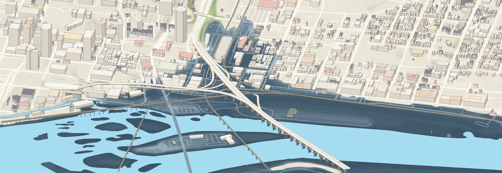
Fig. 8. November 1985 on the city of 1985: water at 29.7 feet, 192.5 acres under water off the channel, and 148 of the 1,111 buildings shown standing in it [Counts]. No public air photo of the 1980s was found, so 180 buildings are drawn grey.
The floodwall, built from 1988 to 1994
The Corps of Engineers' Norfolk District recommended flood protection for Richmond in a report of September 1980, and the Chief of Engineers reported on it in November 1981. Congress authorized the project in the Water Resources Development Act of 1986, signed November 17, 1986, at a cost of $91.8 million, and the law says it "shall include flood protection for the Richmond municipal wastewater treatment facility" [WRDA 1986]. The city's utilities department has said the approval followed the 1985 flood [City utilities 2020]. A 1989 state report gives November 5, 1988 as the start of construction [Virginia HD 64]. Congress raised the cost ceiling to $134 million in 1993 [Public Law 103-135], and the wall was dedicated on October 21, 1994 [Floodwall marker]. The city gives its final cost as $143 million [City utilities 2020].
It is two separate works. On the north bank a concrete wall about 4,277 feet long runs from 12th and Byrd streets to 21st and East Cary streets, across the mouth of the Shockoe Valley [City floodwall FAQ], standing 4 to 30 feet above the ground [Floodwall marker]. On the south bank a line of concrete wall and earthen levee about 13,046 feet long, with a stretch of bin wall, runs from west of the Manchester Bridge along the river to I-95, then south and west across the railroad to high ground near Goodes Street [Floodwall marker; City floodwall FAQ]. Just west of the Mayo Bridge the wall is a gravity U-wall, 43 feet from its top to the river's edge [City floodwall FAQ]. Together the two protect about 750 acres, 150 in Shockoe and 600 in Manchester [Floodwall marker]. Streets, rail lines, the canal and footpaths pass through 19 openings, closed with gates when the river rises [City utilities 2020].
No public document we found gives the wall's surveyed top. The weather service's list of what floods at each stage says the wall is overtopped at 41 feet at the City Locks [NWS City Locks], about five and a half feet above Agnes, and the drawings use that height for the wall. The city describes the northern wall as built for a flood with an average recurrence of about 280 years [City FloodKit 2026], and FEMA's 1998 study found that the system met its rule of at least three feet of freeboard above the 100-year flood, but does not provide adequate protection for the 500-year flood [FEMA Richmond 1998].

Fig. 9. The 1972 flood on the 1972 city (left of the divider), and water at the same height, 35.5 feet, on today's city behind today's wall with its gates shut (right). No flood has done this; it shows what the wall holds back. Behind the wall the Bottom is dry. Between the wall and the river 111.0 acres lie under water, and 22 of the 1,101 buildings shown stand in it [Counts]. The gauge reading 26 feet at Great Shiplock Park stands on the park's low ground by the water, lower than the ground the high-water sign stands on, which is why it reads more than the sign's 17 feet.
The wall's two tests: Fran in 1996 and November 2020
The remnants of Hurricane Fran brought the highest water since the wall: 23.75 feet at the City Locks on September 8, 1996 [NWS City Locks], about 22.7 feet today (perhaps a foot more; the record does not say which datum the gauge used that year) [Second read], about 17 to 18 feet below the overtopping stage. Some of the wall's gates were shut in each of 1996's two floods, in January and in Fran [RVANews 2011].
In November 2020 the James crested at 16.96 feet at the City Locks early on November 14 [USGS City Locks]. The city shut the 17th Street closure on Dock Street at noon on November 12 and the Brander Street gate in Manchester that evening [WTVR 2020; City utilities 2020]. The Dock Street closure was shut again in February 2025, for the first time since 2020 [The Richmonder 2025]. As of 2011 the James had never forced the city to close all of its gates [RVANews 2011].

Fig. 10. Fran's height in September 1996 (left of the divider) and the November 2020 height (right), each on the city of its year, with the wall's openings drawn shut. Outside the wall, water covers 89.5 acres at Fran's height and 36.8 acres in 2020; behind it the Bottom is dry [Counts].
Manchester at the 1972 height, with today's wall and without it
The south wall is the longer work, and Manchester is where its effect shows most. The divider below puts water at the height of the 1972 flood, 35.5 feet, on today's Manchester twice: with today's wall and its gates shut, and with no wall. No flood has done either. Without the wall, 527.1 acres of this view lie under water and 246 of its 412 buildings stand in it, the deepest in 29.1 feet. At the foot of the Mayo Bridge on Hull Street the water would stand about 14 feet deep. With the wall, the flats behind it are dry, and 41.5 acres lie under water outside it [Counts].
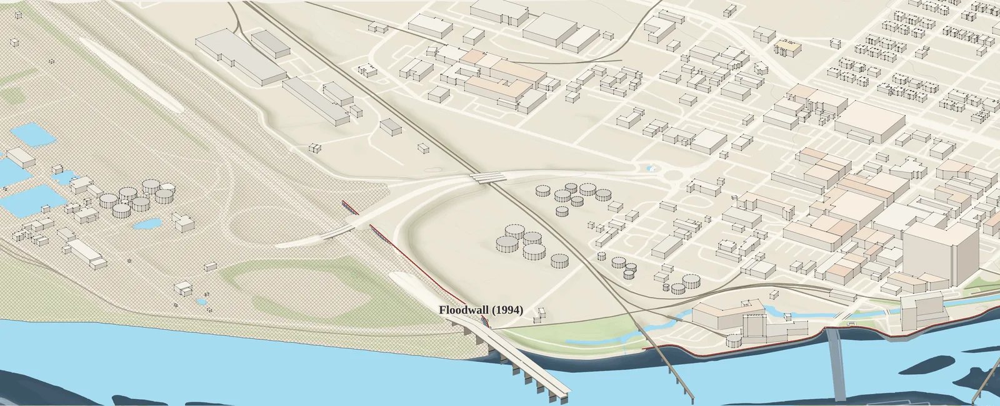
⤢
Fig. 11. Manchester at the 1972 height, with today's wall and its gates shut (left of the divider) and with no wall (right). The view looks south-southwest from over the river, with the Mayo Bridge at the lower right. The cross-hatch at the left marks 212.8 acres, with 54 buildings on them, whose protection the data cannot show [Counts].
The cross-hatch marks the largest thing the drawing does not know. The concrete parts of the south wall are in OpenStreetMap; the earthen levee, 7,170 feet of it, which carries the line from I-95 south toward Goodes Street, is not [Floodwall research]. The lidar shows a continuous ridge along I-95 at about 43 to 45 feet, above the overtopping stage, but it cannot say whether that ridge is the levee or the highway's fill [Case-study log]. The 1986 law required the project to protect the city's wastewater treatment plant [WRDA 1986], which stands east of I-95. With the walls alone, the water in the drawing runs round their end into that ground. The drawing does not guess where the levee runs. It draws that ground cross-hatched, with no depth and out of the counts, and the hatch's edges follow the levee's possible courses [How it's made, Floods].
August 30, 2004: Gaston's rain on Shockoe Bottom
Nearly ten years after the wall was dedicated, Shockoe Bottom flooded again, and this time the water fell from the sky. Gaston came ashore in South Carolina on the morning of August 29, 2004, and was a tropical depression when its center crossed into Virginia the next day, passing well southeast of Richmond [NHC Gaston report]. Storms that formed north and west of the center, along a boundary from Hampton Roads to Richmond, drifted northwest and stalled over the city from early afternoon into the evening [NWS Gaston paper]. The two main forecast models had called for one to two inches of rain over southern Virginia that day [NWS Gaston paper].
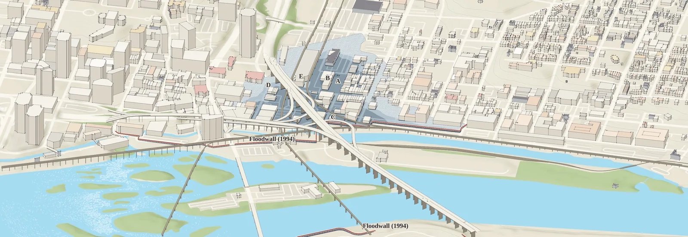
Fig. 12. Shockoe Bottom in Gaston's rain, on the city of 2004. Solid water to about 28 feet, the level the most repeated report, "up to 10 feet", implies on the lowest streets (about 17 to 18 feet), and a hatch to 35 feet, the top of what they imply. The floodwall's openings are drawn dashed, because they stood open. The water is held on the city side of the wall, since with the gates open and the James low, water that reached the openings ran out to the river. Lettered pins mark places named in reports [Gaston depths; Counts].
Over the land that drains to the Bottom, about 12 square miles (7,780 acres), the rain averaged about 10 inches, by the series' own reading of the weather radar corrected to rain gauges, with a range of 8.6 to 11.6 inches across the estimates [Rain analysis]. That is about 2.2 billion gallons of water. Most of it fell between 2 and 9 p.m., and every hour from 2 to 8 p.m. brought between 1.3 and 2.2 inches. Its wettest hour, about 2.2 inches from 5 to 6 p.m., was a rain that falls at a point about once in ten years. What was rare was its length. About 10 inches fell on the whole watershed in six hours, which reaches or passes the amount NOAA's Atlas 14 gives for a one-in-1,000-year six-hour rain at a single point, 8.04 inches, by every estimate but one [Rain analysis; NOAA Atlas 14]. How often a flood like the one that followed may come depends on the pipes and the ground as well, and is not known.
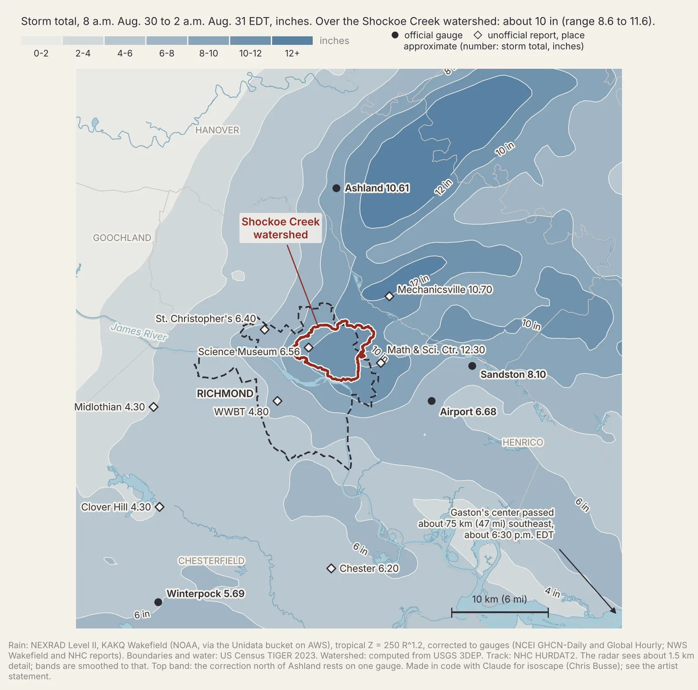
Fig. 13. Gaston's rain over Richmond, 8 a.m. August 30 to 2 a.m. August 31, in inches, with the Shockoe Creek watershed in red and the city line dashed. How this was made: drawn in code with Claude for this series from NEXRAD radar (NOAA) corrected to rain gauges [Rain analysis].
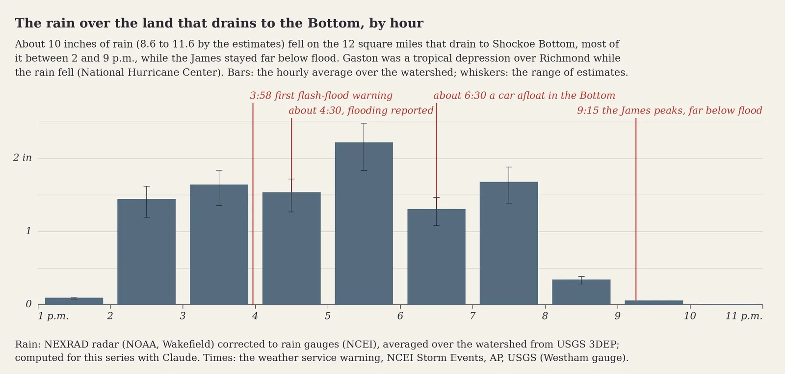
Fig. 14. The rain each hour over the land that drains to the Bottom, with the range of estimates. The first flash-flood warning went out at 3:58 p.m. [Style Weekly 2004]. The weather service's storm record starts the flash flooding at 4:30, in a time it labels standard, which may mean 5:30 daylight time [Storm Events 2004]. A car was seen afloat in the Bottom about 6:30 [AP, Sept. 2, 2004]. How this was made: the rain chart drawn for the series' 2004 picture [Rain analysis].
The water the drains could not take ran to the low point. Shockoe Bottom is a bowl: its lowest streets lie below the strip along the river where Dock Street, the railroad embankments and the floodwall stand [Gaston mechanism]. Runoff poured off Church Hill and the slope below the Capitol into the Bottom [AP, Sept. 20, 2004], and most of the water came together at 17th and Main [Washington Post 2004]. The floodwall's gates stood open [AP, Sept. 20, 2004]; the city closes them when the James rises toward them [NBC12 2018], and the river stayed low. The James at Westham peaked at 14,800 cubic feet a second at 9:15 p.m., about a third of the flow at which minor flooding begins there [USGS Westham; NWS Westham].
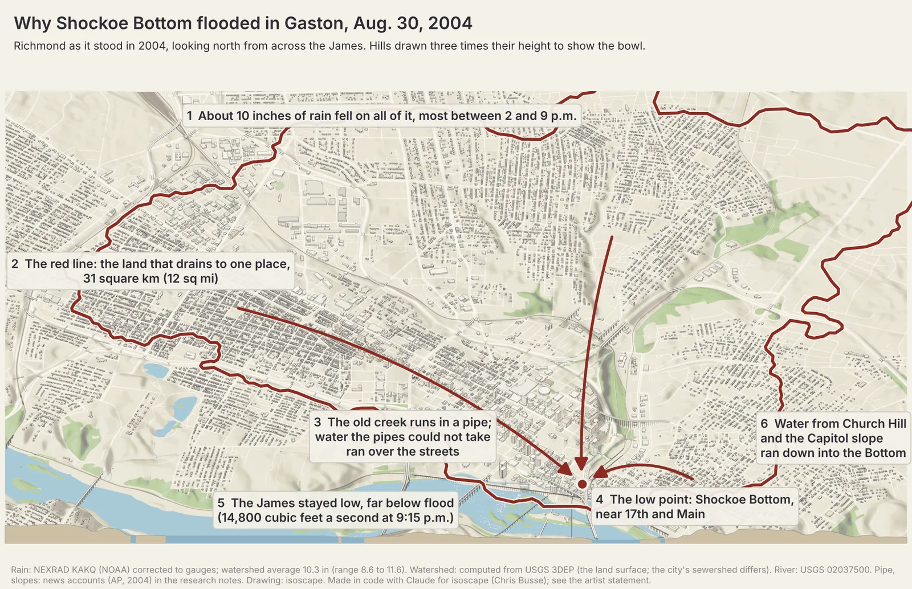
Fig. 15. The land that drains to one low point near 17th and Main, outlined in red, on isoscape's Richmond of 2004, its hills drawn three times their height to show the bowl. How this was made: drawn in code with Claude over isoscape's drawing [Rain analysis].
We tested the bowl on the same lidar the drawings use. A pool rising from the Bottom's lowest point first reaches the James at about 19.1 feet, over a low saddle at 17th and Dock streets; with the wall standing and its openings open at street level, at about 21.7 feet, through the Dock Street opening near 18th Street [Spill test]. FEMA's model of Shockoe Creek, made for its own purposes, puts the one-percent flood level near Dock Street at 19.4 feet [FEMA Richmond 2025]. Every depth reported in Gaston implies water well above both, so it stood that high only while more of it arrived than could leave. A rough calculation of water spilling over the riverfront puts the reports between what an open riverfront and the wall's openings alone would allow, a question for a proper hydraulic model [Spill test]. Whether the wall's line raised the water in the Bottom, and by how much, is not known.
No surveyed high-water marks were found for Gaston in the Bottom. Reports give depths at single places: up to 10 feet in the Bottom [AP, Aug. 31, 2004; Storm Events 2004]; water 13 feet up the dining-room wall at Havana '59 on 17th Street, by its owner's account [Washington Post 2004]; 6 feet 2 inches inside Bottoms Up Pizza on Dock Street, above a 3-foot step at its door [NBC12 2022]; and 7 feet up the walls of a law office on Main Street [AP, Sept. 20, 2004]. A developer described rapids at 15th and Main [WTVR 2024], and the restored Main Street Station escaped damage [Washington Post 2004]. Set on the lidar's ground, the depths imply a surface anywhere from about 24 to 35 feet, too wide a spread to call one level [Gaston depths]. The drawing uses about 28 feet, the level the most repeated report, "up to 10 feet", implies on the lowest streets (about 17 to 18 feet), and hatches the ground above it to 35 feet. At 28 feet the water stands about 9 feet deep at the market and covers 31.4 acres, with 99 of the 1,059 buildings shown standing in it [Counts].
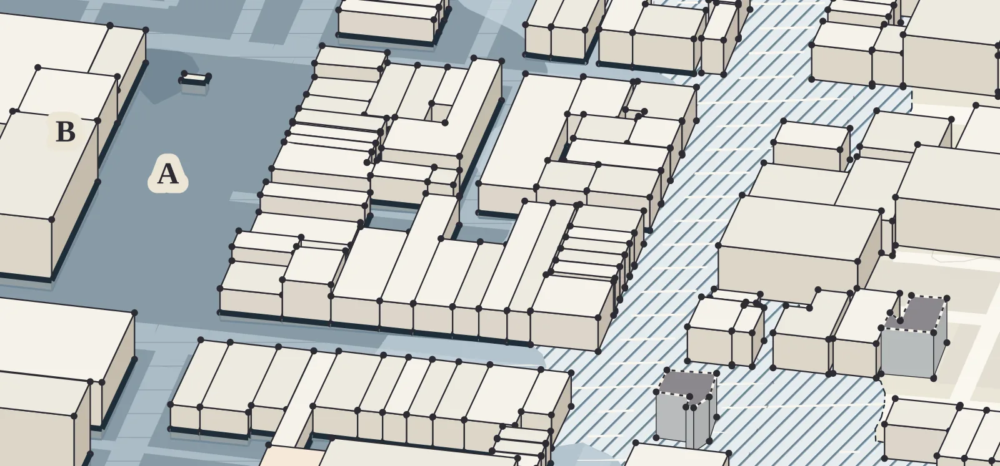
Fig. 16. The 17th Street Market in the Gaston drawing, close up: pin A where most of the water came together, pin B at Havana '59's usual address, and the hatch for the higher reports at the right. How this was made: a crop of the 2004 drawing.
Eight people died in flash floods in and around Richmond that evening and night, three of them in the city [Storm Events 2004; NHC Gaston report]. Two died in Gillies Creek in the East End, about a mile east of the Bottom [AP, Sept. 1, 2004; Washington Post 2004]. No source we found places a death in Shockoe Bottom itself. In the Bottom, fire crews took people out by raft and boat, and at Bottoms Up about two dozen staff and customers waited on the second-floor deck [NBC12 2022]. About 20 blocks were roped off and condemned until their buildings could be inspected [Storm Events 2004; AP, Aug. 31, 2004], and the weather service's storm record puts property damage in the city at $20 million [Storm Events 2004]. Almost no one in the Bottom carried flood insurance: the wall had taken the Bottom out of the mapped flood zone, and lenders had stopped requiring it [AP, Sept. 20, 2004; WTVR 2024].
In August 2009 a group of Shockoe businesses and property owners sued the city, alleging that the way it ran its sewer gates and a pumping station made the flooding worse; we found no record of how the case ended [BizSense 2009].
Afterward the city moved and added about 100 street inlets and let street water drain into the canal through flap gates, at a cost of about $20 million over a decade, and in 2018 its utilities director said the system could carry more than three times the stormwater it could carry in 2004 [NBC12 2018]. No rain since that the research checked has come close over the watershed, on the AORC record [Gaston mechanism], and city officials have said that one that did could flood the Bottom again [NBC12 2018].
What the drawings cannot show
- Movement and time. Each drawing fills the ground to one height, as water fills a basin. Real floods rise and fall, and they reach low ground through drains and culverts that the lidar cannot see. Ground below the height that a real flood did not reach in time is drawn wet [How it's made, Floods].
- One height for the whole reach. The height is read at the City Locks. Toward the Mayo Bridge the drawings for 1972, 1985 and 1996 add about a foot, the rise measured in 1969, which nobody measured in those floods. West of the bridge the water is held at the bridge's height, while the real surface climbs into the falls, so the drawings there are likely low [Levels].
- Today's ground. Every flood is drawn on the lidar survey of today's ground, smoothed onto a 5-meter grid. The ground under the 1771 and 1936 water was not the ground of today [How it's made, Floods].
- Walls the sources do not give. The floodwall's top is drawn at the weather service's overtopping stage, since no surveyed top is public. Manchester's earthen levee is not in the map data, so the ground it may protect is cross-hatched. The older levee at the mouth of Shockoe Creek, which FEMA's 1998 study says gave limited protection before the floodwall, is not drawn at all: its line and height are not in our sources, so the drawings of 1936, 1969 and 1985 may show water where it held some back [FEMA Richmond 1998].
- Buildings. The grey buildings are ones no source confirms for the year. Most building heights are estimates, as are the heights of bridge decks above the water. A building the water would have covered entirely is left off the flood drawing and drawn on its dry twin [How it's made, Floods].
- Gaston's depths and rain. The water in the 2004 drawing stands at about 28 feet, the level the most repeated report, "up to 10 feet", implies on the lowest streets (about 17 to 18 feet), set on the lidar; it was moving, and it did not stand at one level. The rain figures are radar estimates corrected to gauges, good to about 40 percent either way at a point and better over the whole watershed. The watershed is the land surface, which differs from the area the sewers serve [Rain analysis].
How this page was made
Chris Busse drew the maps with isoscape, the drawing tool he has built with Claude; see the artist statement for how he works with it. The flood levels, the city of each year, the counts and the rain were worked out in code with Claude under his direction, from the sources below; the method is in How it's made, under Floods. The drawings and their printed wording were checked in three rounds in November 2026 by a separate Claude agent that had not made them, and wording that said more than its sources was corrected; this page follows the corrected wording. The text was drafted with Claude for Chris Busse and fact-checked the same way on November 26, 2026: a separate Claude agent checked every figure on the page against the sources listed below.
Map data © OpenStreetMap contributors (ODbL). Ground: USGS 3DEP lidar. Buildings: City of Richmond assessor records and Sanborn maps (Library of Congress), with air photos of 1974 (USGS) and 1999 to 2021 (City of Richmond, VGIN). Rain: NEXRAD radar (NOAA) and NCEI rain gauges.
Corrections and changes
None yet. Each correction to this page will be listed here with its date.
Sources
Opened on the date given, by the series' research (November 23 to 25, 2026) or for this draft (November 25, 2026). Where a source was read through the series' research notes, the note is named.
NWS City Locks
National Weather Service, National Water Prediction Service, James River at Richmond-City Locks
(RICV2): historic crests and flood impacts, including 41 ft, "Flood wall is overtopped."
https://api.water.noaa.gov/nwps/v1/gauges/ricv2. Opened November 23, 2026 (series research,
drafts/richmond-floods/casestudy/2026-11-23-02-research-river-floods-and-the-wall/floods.md).
NWS Westham
National Weather Service, National Water Prediction Service, James River at Richmond-Westham (RMDV2): flood categories (minor flooding at 12 ft, 42,000 cfs). https://api.water.noaa.gov/nwps/v1/gauges/RMDV2. Opened November 23, 2026 (series research).
USGS Westham
U.S. Geological Survey, James River near Richmond, VA (02037500): annual peaks (Agnes, 313,000 cfs), drainage area, and instantaneous discharge for August 30 to 31, 2004 (peak 14,800 cfs at 9:15 p.m.). https://nwis.waterdata.usgs.gov/nwis/peak?site_no=02037500&agency_cd=USGS&format=rdb; https://nwis.waterservices.usgs.gov/nwis/iv/?format=rdb&sites=02037500&startDT=2004-08-30&endDT=2004-08-31. Opened November 23, 2026 (series research).
USGS City Locks
U.S. Geological Survey, James River at City Locks at Richmond, VA (02037705), water surface elevation
above NAVD 1988 (parameter 62620), approved instantaneous values: 16.96 ft, November 14, 2020.
https://waterservices.usgs.gov/nwis/site/?format=rdb&sites=02037705&seriesCatalogOutput=true.
Opened November 23, 2026 (series research, drafts/richmond-floods/casestudy/2026-11-23-04-fema-profiles-and-second-read/second-read.md).
USGS OFR 70-51
U.S. Geological Survey, Open-File Report 70-51 (1970), station 02-0377.00, printed p. 119 (PDF p. 131); Table 2, printed p. 20; text, printed p. 22. https://pubs.usgs.gov/of/1970/0051/report.pdf. Opened November 23, 2026 (series research).
USGS HA-410
E. M. Miller, Flood of August 1969, Richmond Quadrangle, Richmond, Virginia, U.S. Geological Survey
Hydrologic Atlas HA-410 (1969): Table 1, Figure 1 and the mapped extent.
https://pubs.usgs.gov/ha/410/plate-1.pdf. Opened November 23, 2026 (series research; Figure 1 read
at 300 dpi in drafts/richmond-floods/casestudy/2026-11-23-04-fema-profiles-and-second-read/second-read.md).
USGS PP 924
U.S. Geological Survey, Professional Paper 924 (Agnes), Table A4, PDF p. 406, and p. 95. https://pubs.usgs.gov/pp/0924/report.pdf. Opened November 23, 2026 (series research).
NOAA Agnes report
NOAA, Final Report of the Disaster Survey Team on the Events of Agnes, October 1972. https://www.govinfo.gov/content/pkg/CZIC-gb70-9-u55-1972/html/CZIC-gb70-9-u55-1972.htm. Opened November 23, 2026 (series research).
Agnes sign
High-water mark sign, Great Shiplock Park, Dock and Pear streets (City of Richmond, FEMA, Corps of Engineers, NWS, USGS and state agencies), transcribed by the Historical Marker Database. https://www.hmdb.org/m.asp?m=133685. Opened November 23, 2026 (series research).
Floodwall marker
Corps of Engineers and City of Richmond, "Richmond Local Flood Protection" marker, Dock and 17th streets, transcribed by the Historical Marker Database. https://www.hmdb.org/m.asp?m=23953. Opened November 23, 2026 (series research).
City floodwall FAQ
City of Richmond, Department of Public Utilities, "Floodwall FAQs." https://www.rva.gov/public-utilities/news/floodwall-faqs. Opened November 23, 2026 (series research).
City FloodKit 2026
City of Richmond, FloodKit, February 25, 2026, PDF p. 5. https://rva.gov/sites/default/files/2026-03/FloodKit-20260225.pdf. Opened November 23, 2026 (series research).
City utilities 2020
City of Richmond, Department of Public Utilities, thread on the floodwall, November 2020 (final cost, 19 closures, the 2020 closures), copy at https://threadreaderapp.com/thread/1326952085598986241.html. Opened November 23, 2026 (series research). It dates the 1985 flood to 1986, which is wrong; nothing here rests on that.
WRDA 1986
Water Resources Development Act of 1986, Public Law 99-662, sec. 401(a), 100 Stat. 4126. https://www.govinfo.gov/content/pkg/STATUTE-100/pdf/STATUTE-100-Pg4082.pdf. Opened November 23, 2026 (series research).
Public Law 103-135
Public Law 103-135 (November 8, 1993), 107 Stat. 1375. https://www.congress.gov/103/statute/STATUTE-107/STATUTE-107-Pg1375.pdf. Opened November 23, 2026 (series research).
Virginia HD 64
Virginia House Document No. 64 (1989). https://rga.lis.virginia.gov/Published/1989/HD64/PDF. Opened November 23, 2026 (series research; not reread by a second Claude check).
FEMA Richmond 1998
FEMA, Flood Insurance Study, City of Richmond, Virginia (community 510129), July 20, 1998
(510129V000), PDF p. 9, levee history. From FEMA's Map Service Center, https://msc.fema.gov. Read November 23, 2026
(series research, drafts/richmond-floods/casestudy/2026-11-23-04-fema-profiles-and-second-read/fis.md).
FEMA Richmond 2025
FEMA, Flood Insurance Study, City of Richmond, Virginia (community 510129), effective July 8, 2025
(510129V000C), Table 5 (PDF p. 27) and the Shockoe Creek floodway data (PDF p. 70). From
https://msc.fema.gov. Read November 23, 2026 (series research, drafts/richmond-floods/casestudy/2026-11-23-04-fema-profiles-and-second-read/fis.md).
RVANews 2011
RVANews, May 12, 2011. https://rvanews.com/?p=41409. Opened November 23, 2026 (series research).
WTVR 2020
WTVR, "Richmond closes floodwall as James River to crest Friday," November 12, 2020. https://www.wtvr.com/news/local-news/richmond-closes-floodwall-james-river-to-crest-friday. Opened November 23, 2026 (series research).
The Richmonder 2025
The Richmonder, "Richmond floodwall to close for the first time since 2020," February 17, 2025. https://www.richmonder.org/richmond-floodwall-to-close-for-the-first-time-since-2020/. Opened November 23, 2026 (series research).
Henrico County
Henrico County, "The Flood of 1771." https://henrico.gov/locations/flood/. Opened November 23, 2026 (series research).
Richmond Family Magazine 2019
Richmond Family Magazine, "Water, water everywhere," July 30, 2019. https://richmondfamilymagazine.com/community/history/water-water-everywhere/. Opened November 23, 2026 (series research).
Watson, Virginia Floods
Barbara McNaught Watson, "Virginia Floods" (National Weather Service; undated), copy at https://corpora.tika.apache.org/base/docs/govdocs1/204/204582.html. Opened November 25, 2026.
NHC Gaston report
National Hurricane Center, Tropical Cyclone Report, Hurricane Gaston (AL072004), revised February 16, 2005: Table 1, p. 3 (deaths), Table 3, p. 8. https://www.nhc.noaa.gov/data/tcr/AL072004_Gaston.pdf. Opened November 23, 2026 (series research).
NWS Gaston paper
J. Billet and K. Lynch, NWS Wakefield, "A Look at Tropical Storm Gaston Flooding in Virginia," pp. 1 and 4. https://www.glenallenweather.com/historylinks/2004/GastonFlood31aug2004.pdf. Opened November 23, 2026 (series research).
Storm Events 2004
NOAA National Centers for Environmental Information, Storm Events Database, 2004 details and fatalities files, events 5421490 to 5421493 and 5421547. https://www.ncei.noaa.gov/pub/data/swdi/stormevents/csvfiles/. Opened November 23, 2026 (series research).
NOAA Atlas 14
NOAA Atlas 14, Volume 2, Version 3, precipitation frequency at the watershed's center. https://hdsc.nws.noaa.gov/pfds/. Opened November 23, 2026 (rain analysis).
Style Weekly 2004
"Duping the Dopplers," Style Weekly (September 2004). https://m.styleweekly.com/richmond/duping-the-dopplers/Content?oid=1378080. Opened November 23, 2026 (series research).
AP, Aug. 31, 2004
Associated Press, "Gaston Kills 5; Parts of Richmond Condemned," August 31, 2004. https://www.foxnews.com/story/gaston-kills-5-parts-of-richmond-condemned.amp. Opened November 23, 2026 (series research).
AP, Sept. 1, 2004
Associated Press, "Gaston Flooding Devastates Richmond," September 1, 2004. https://www.foxnews.com/story/gaston-flooding-devastates-richmond. Opened November 23, 2026 (series research).
AP, Sept. 2, 2004
Associated Press, "Historic Richmond Hard Hit by Gaston Flooding," Insurance Journal, September 2,
- https://www.insurancejournal.com/news/east/2004/09/02/45479.htm. Opened November 23, 2026
(series research,
drafts/richmond-floods/casestudy/2026-11-23-03-research-gaston-and-the-weather/sources.md, S23).
AP, Sept. 20, 2004
Associated Press, "Historic Richmond Facing Uncertain Future After Flooding," Insurance Journal, September 20, 2004. https://www.insurancejournal.com/magazines/mag-features/2004/09/20/46665.htm. Opened November 23, 2026 (series research).
Washington Post 2004
"Bottom's Up," The Washington Post, November 30, 2004. https://www.washingtonpost.com/wp-dyn/articles/A23727-2004Nov30.html. Opened November 23, 2026 (series research).
NBC12 2018
Kelly Avellino, "Richmond in best position since Gaston to withstand Florence," NBC12, September 11,
- https://www.12onyourside.com/2018/09/11/richmond-best-position-since-gaston-withstand-florence-floodwalls-likely-wont-close/. Opened November 23, 2026 (series research).
NBC12 2022
"Remembering the destruction of Hurricane Gaston 18 years later," NBC12, August 30, 2022. https://www.12onyourside.com/2022/08/30/remembering-destruction-hurricane-gaston-18-years-later/. Opened November 23, 2026 (series research).
WTVR 2024
"Richmond Remembers: How Gaston flooded Shockoe Bottom," WTVR, August 30, 2024. https://wtvr.com/news/local-news/richmond-remembers-tropical-storm-gaston-aug-30-2024. Opened November 23, 2026 (series research).
BizSense 2009
"Shockoe businesses sue city for $31 million," Richmond BizSense, August 28, 2009. https://richmondbizsense.com/2009/08/28/shockoe-businesses-sue-city-for-31-million/. Opened November 23, 2026 (series research).
The Richmonder 2024
Sean Sublette, "Helene's impact on Richmond, and remembering Gaston," The Richmonder, September 24,
- https://www.richmonder.org/helene-and-the-hidden-creek-2/. Opened November 23, 2026 (series research).
Richmond magazine 2013
"Otherwise Known As 'Chyinek'," Richmond magazine, September 27, 2013. https://richmondmagazine.com/news/shockoe-creek-history/. Opened November 23, 2026 (series research).
Rain analysis
The series' rain analysis: NEXRAD Level II from the Wakefield radar (NOAA), corrected to NCEI rain
gauges, averaged over the Shockoe Creek watershed computed from USGS 3DEP; done in code with Claude.
tools/floods/rain/README.md and tools/floods/rain/data/rain.json, November 23, 2026.
Spill test
The series' spill-path test of Shockoe Bottom on the 2-meter lidar: tools/floods/spill.py, results in
drafts/richmond-floods/casestudy/2026-11-23-15-spill-path/ and its correction in drafts/richmond-floods/casestudy/2026-11-23-20-spill-probes-corrected/, November
23, 2026.
Levels
The series' checked flood levels, levels.json and second-read.md in
drafts/richmond-floods/casestudy/2026-11-23-04-fema-profiles-and-second-read/, November 23, 2026.
Second read
A second Claude check of the river research, drafts/richmond-floods/casestudy/2026-11-23-04-fema-profiles-and-second-read/second-read.md, November 23, 2026.
River datums
The series' research on gauge datums, drafts/richmond-floods/casestudy/2026-11-23-02-research-river-floods-and-the-wall/datums.md, with NOAA NGS's NCAT conversion
(https://geodesy.noaa.gov/api/ncat/llh), November 23, 2026.
River floods research
The series' research on the river floods, drafts/richmond-floods/casestudy/2026-11-23-02-research-river-floods-and-the-wall/floods.md (the crest table), November 23, 2026.
Floodwall research
The series' research on the floodwall, drafts/richmond-floods/casestudy/2026-11-23-02-research-river-floods-and-the-wall/floodwall.md, November 23, 2026.
Gaston depths
The series' research on Gaston's water, drafts/richmond-floods/casestudy/2026-11-23-03-research-gaston-and-the-weather/gaston-water.md, sections 2 and 4, November 23,
Gaston mechanism
The series' research on why the Bottom flooded in Gaston, drafts/richmond-floods/casestudy/2026-11-23-03-research-gaston-and-the-weather/gaston-mechanism.md, November 23,
Counts
Each drawing's counts from its build: drafts/richmond-floods/counts.json (final draft), November 25, 2026.
How it's made, Floods
How it's made, under Floods: the method, the evidence for the city of each year, and the drawing.
Case-study log
The series' case-study log, drafts/richmond-floods/casestudy/log.md, under "d2: two areas" (the
Manchester levee on the lidar), November 24, 2026.
Read this as a PDF: phone edition, large-screen edition